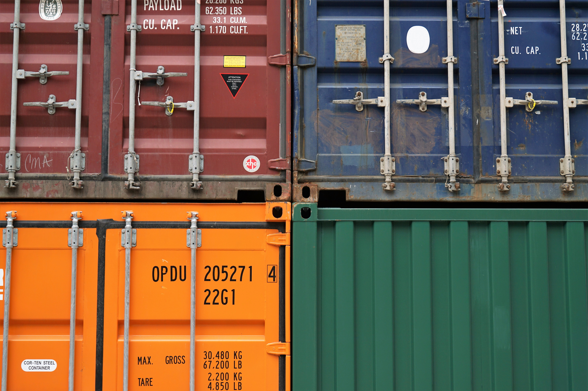
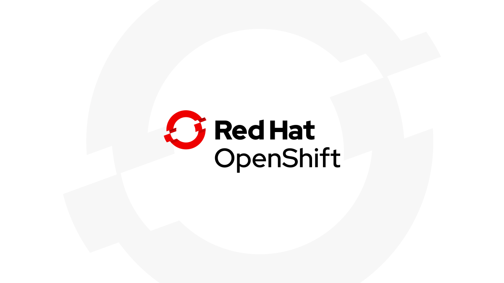
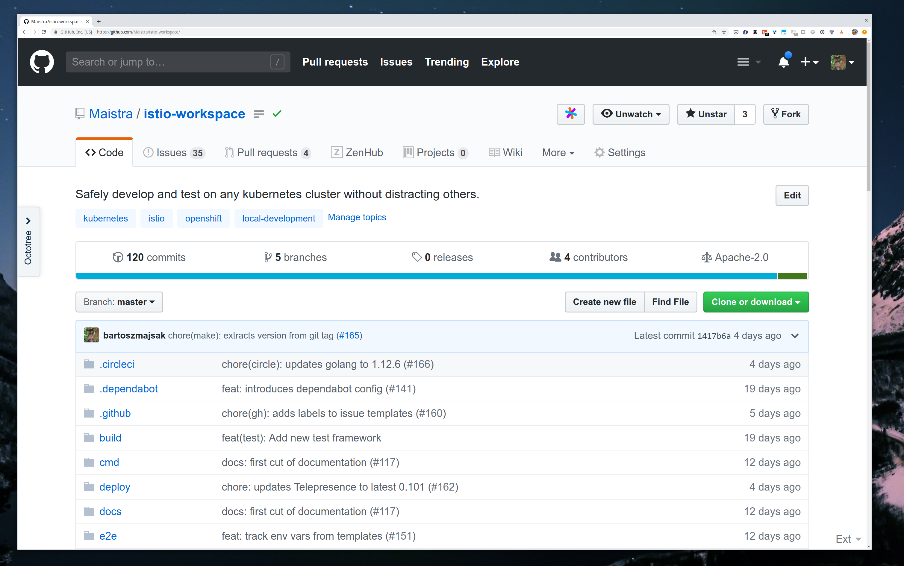

Let's develop on Prod! Wait! Whaaaat?!

Staging environment
- Challenging to keep in-sync with prod
- Extra costs
- Uncertainty
Will it work on production ?

What is it?
- k8s operator to coordinate cluster setup
- cli tool for local development
Goals
Easily validate your changes without interfering other services and users
Interact with other services in the cluster
Write software locally using your favorite tools


Roadmap
- IDE integrations
- CI/CD use cases
- Tell us what else do you need!
maistra/istio-workspace
